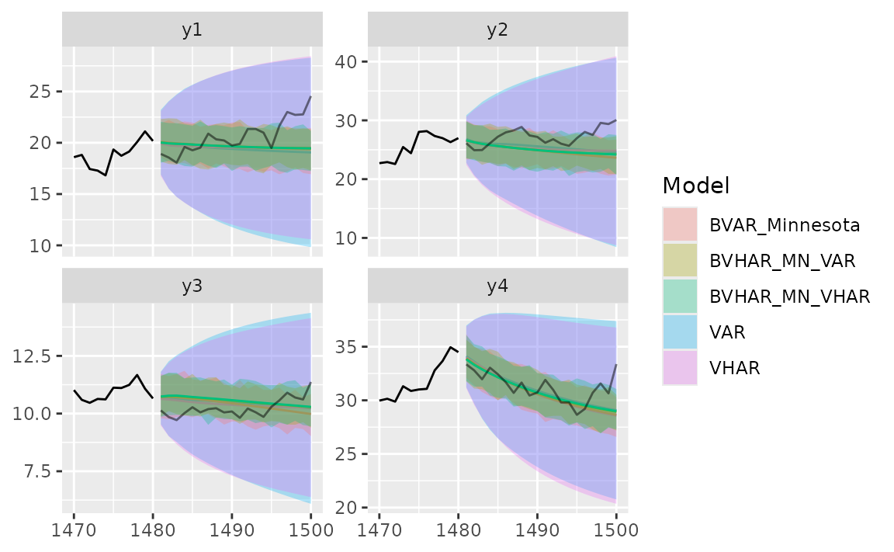

Simulation
Given VAR coefficient and VHAR coefficient each,
-
sim_var(num_sim, num_burn, var_coef, var_lag, sig_error, init)generates VAR process -
sim_vhar(num_sim, num_burn, vhar_coef, sig_error, init)generates VHAR process
We use coefficient matrix estimated by VAR(5) in introduction vignette.
Consider
coef(ex_fit)
#> GVZCLS OVXCLS EVZCLS VXFXICLS
#> GVZCLS_1 0.93302 -0.02332 -0.007712 -0.03853
#> OVXCLS_1 0.05429 1.00399 0.009806 0.01062
#> EVZCLS_1 0.06794 -0.13900 0.983825 0.07783
#> VXFXICLS_1 -0.03399 0.03404 0.020719 0.93350
#> GVZCLS_2 -0.07831 0.08753 0.019302 0.08939
#> OVXCLS_2 -0.04770 0.01480 0.003888 0.04392
#> EVZCLS_2 0.08082 0.26704 -0.110017 -0.07163
#> VXFXICLS_2 0.05465 -0.12154 -0.040349 0.04012
#> GVZCLS_3 0.04332 -0.02459 -0.011041 -0.02556
#> OVXCLS_3 -0.00594 -0.09550 0.006638 -0.04981
#> EVZCLS_3 -0.02952 -0.04926 0.091056 0.01204
#> VXFXICLS_3 -0.05876 -0.05995 0.003803 -0.02027
#> GVZCLS_4 -0.00845 -0.04490 0.005415 -0.00817
#> OVXCLS_4 0.01070 -0.00383 -0.022806 -0.05557
#> EVZCLS_4 -0.01971 -0.02008 -0.016535 0.08229
#> VXFXICLS_4 0.06139 0.14403 0.019780 -0.10271
#> GVZCLS_5 0.07301 0.01093 -0.010994 -0.01526
#> OVXCLS_5 -0.01658 0.07401 0.007035 0.04297
#> EVZCLS_5 -0.08794 -0.06189 0.021082 -0.02465
#> VXFXICLS_5 -0.01739 0.00169 0.000335 0.09384
#> const 0.57370 0.15256 0.132842 0.87785
ex_fit$covmat
#> GVZCLS OVXCLS EVZCLS VXFXICLS
#> GVZCLS 1.157 0.403 0.127 0.332
#> OVXCLS 0.403 1.740 0.115 0.438
#> EVZCLS 0.127 0.115 0.144 0.127
#> VXFXICLS 0.332 0.438 0.127 1.028Then
m <- ncol(ex_fit$coefficients)
# generate VAR(5)-----------------
y <- sim_var(
num_sim = 1500,
num_burn = 100,
var_coef = coef(ex_fit),
var_lag = 5L,
sig_error = ex_fit$covmat,
init = matrix(0L, nrow = 5L, ncol = m)
)
# colname: y1, y2, ...------------
colnames(y) <- paste0("y", 1:m)
head(y)
#> y1 y2 y3 y4
#> [1,] 18.7 26.5 7.55 26.2
#> [2,] 18.2 25.8 7.39 25.6
#> [3,] 19.7 25.3 7.40 26.1
#> [4,] 20.6 24.5 7.34 26.4
#> [5,] 21.6 24.6 7.06 27.8
#> [6,] 22.5 23.7 7.02 25.8
h <- 20
y_eval <- divide_ts(y, h)
y_train <- y_eval$train # train
y_test <- y_eval$test # testFitting Models
BVAR(5)
Minnesota prior
# hyper parameters---------------------------
y_sig <- apply(y_train, 2, sd) # sigma vector
y_lam <- .2 # lambda
y_delta <- rep(.2, m) # delta vector (0 vector since RV stationary)
eps <- 1e-04 # very small number
spec_bvar <- set_bvar(y_sig, y_lam, y_delta, eps)
# fit---------------------------------------
model_bvar <- bvar_minnesota(y_train, p = 5, bayes_spec = spec_bvar)BVHAR
BVHAR-S
spec_bvhar_v1 <- set_bvhar(y_sig, y_lam, y_delta, eps)
# fit---------------------------------------
model_bvhar_v1 <- bvhar_minnesota(y_train, bayes_spec = spec_bvhar_v1)BVHAR-L
# weights----------------------------------
y_day <- rep(.1, m)
y_week <- rep(.01, m)
y_month <- rep(.01, m)
# spec-------------------------------------
spec_bvhar_v2 <- set_weight_bvhar(
y_sig,
y_lam,
eps,
y_day,
y_week,
y_month
)
# fit--------------------------------------
model_bvhar_v2 <- bvhar_minnesota(y_train, bayes_spec = spec_bvhar_v2)Splitting
You can forecast using predict() method with above
objects. You should set the step of the forecasting using
n_ahead argument.
In addition, the result of this forecast will return another class
called predbvhar to use some methods,
- Plot:
autoplot.predbvhar() - Evaluation:
mse.predbvhar(),mae.predbvhar(),mape.predbvhar(),mase.predbvhar(),mrae.predbvhar(),relmae.predbvhar() - Relative error:
rmape.predbvhar(),rmase.predbvhar(),rmase.predbvhar(),rmsfe.predbvhar(),rmafe.predbvhar()
VAR
(pred_var <- predict(model_var, n_ahead = h))
#> y1 y2 y3 y4
#> [1,] 17.0 37.3 9.56 22.2
#> [2,] 16.8 37.4 9.56 22.4
#> [3,] 16.7 37.3 9.58 22.5
#> [4,] 16.7 37.2 9.57 22.6
#> [5,] 16.7 37.1 9.58 22.7
#> [6,] 16.6 37.0 9.58 22.7
#> [7,] 16.6 36.9 9.58 22.8
#> [8,] 16.5 36.8 9.59 22.9
#> [9,] 16.5 36.8 9.59 22.9
#> [10,] 16.4 36.7 9.59 23.0
#> [11,] 16.4 36.6 9.60 23.1
#> [12,] 16.3 36.5 9.60 23.1
#> [13,] 16.3 36.4 9.60 23.2
#> [14,] 16.3 36.3 9.60 23.3
#> [15,] 16.2 36.3 9.61 23.3
#> [16,] 16.2 36.2 9.61 23.4
#> [17,] 16.2 36.1 9.61 23.4
#> [18,] 16.1 36.0 9.61 23.5
#> [19,] 16.1 35.9 9.61 23.5
#> [20,] 16.1 35.9 9.61 23.6
class(pred_var)
#> [1] "predbvhar"
names(pred_var)
#> [1] "process" "forecast" "se" "lower" "upper"
#> [6] "lower_joint" "upper_joint" "y"The package provides the evaluation function
-
mse(predbvhar, test): MSE -
mape(predbvhar, test): MAPE
(mse_var <- mse(pred_var, y_test))
#> y1 y2 y3 y4
#> 2.416 22.739 0.372 3.115VHAR
(pred_vhar <- predict(model_vhar, n_ahead = h))
#> y1 y2 y3 y4
#> [1,] 17.0 37.5 9.57 22.4
#> [2,] 16.9 37.4 9.56 22.5
#> [3,] 16.8 37.3 9.55 22.5
#> [4,] 16.7 37.2 9.54 22.5
#> [5,] 16.6 37.2 9.53 22.6
#> [6,] 16.5 37.1 9.52 22.6
#> [7,] 16.4 37.0 9.51 22.6
#> [8,] 16.3 36.9 9.49 22.6
#> [9,] 16.2 36.9 9.48 22.6
#> [10,] 16.2 36.8 9.46 22.6
#> [11,] 16.1 36.7 9.45 22.7
#> [12,] 16.0 36.7 9.43 22.7
#> [13,] 15.9 36.6 9.42 22.7
#> [14,] 15.9 36.6 9.41 22.7
#> [15,] 15.8 36.5 9.40 22.8
#> [16,] 15.8 36.5 9.40 22.8
#> [17,] 15.7 36.4 9.39 22.9
#> [18,] 15.7 36.4 9.39 22.9
#> [19,] 15.7 36.3 9.39 23.0
#> [20,] 15.6 36.3 9.39 23.0MSE:
(mse_vhar <- mse(pred_vhar, y_test))
#> y1 y2 y3 y4
#> 3.29 24.46 0.27 3.05BVAR
(pred_bvar <- predict(model_bvar, n_ahead = h))
#> y1 y2 y3 y4
#> [1,] 17.0 37.4 9.52 22.4
#> [2,] 17.0 37.3 9.51 22.6
#> [3,] 16.9 37.1 9.51 22.7
#> [4,] 16.8 37.0 9.51 22.8
#> [5,] 16.8 36.9 9.51 22.9
#> [6,] 16.7 36.8 9.52 22.9
#> [7,] 16.7 36.7 9.52 23.0
#> [8,] 16.6 36.6 9.52 23.1
#> [9,] 16.6 36.5 9.52 23.2
#> [10,] 16.5 36.3 9.53 23.3
#> [11,] 16.5 36.2 9.53 23.3
#> [12,] 16.4 36.1 9.53 23.4
#> [13,] 16.4 36.0 9.53 23.5
#> [14,] 16.4 35.9 9.53 23.5
#> [15,] 16.3 35.8 9.53 23.6
#> [16,] 16.3 35.7 9.54 23.6
#> [17,] 16.3 35.6 9.54 23.7
#> [18,] 16.2 35.5 9.54 23.8
#> [19,] 16.2 35.4 9.54 23.8
#> [20,] 16.2 35.3 9.54 23.9MSE:
(mse_bvar <- mse(pred_bvar, y_test))
#> y1 y2 y3 y4
#> 2.202 19.792 0.319 3.414BVHAR
VAR-type Minnesota
(pred_bvhar_v1 <- predict(model_bvhar_v1, n_ahead = h))
#> y1 y2 y3 y4
#> [1,] 16.9 37.4 9.53 22.4
#> [2,] 16.9 37.2 9.50 22.5
#> [3,] 16.8 37.1 9.48 22.5
#> [4,] 16.8 36.9 9.47 22.6
#> [5,] 16.7 36.8 9.46 22.7
#> [6,] 16.6 36.7 9.45 22.7
#> [7,] 16.5 36.6 9.44 22.8
#> [8,] 16.5 36.5 9.43 22.8
#> [9,] 16.4 36.4 9.43 22.8
#> [10,] 16.3 36.3 9.42 22.9
#> [11,] 16.3 36.2 9.41 22.9
#> [12,] 16.2 36.1 9.41 23.0
#> [13,] 16.2 36.0 9.40 23.0
#> [14,] 16.1 36.0 9.40 23.1
#> [15,] 16.1 35.9 9.40 23.1
#> [16,] 16.1 35.8 9.40 23.2
#> [17,] 16.0 35.8 9.40 23.2
#> [18,] 16.0 35.7 9.40 23.3
#> [19,] 16.0 35.6 9.40 23.3
#> [20,] 16.0 35.5 9.40 23.4MSE:
(mse_bvhar_v1 <- mse(pred_bvhar_v1, y_test))
#> y1 y2 y3 y4
#> 2.655 19.914 0.256 3.103VHAR-type Minnesota
(pred_bvhar_v2 <- predict(model_bvhar_v2, n_ahead = h))
#> y1 y2 y3 y4
#> [1,] 16.9 37.4 9.53 22.4
#> [2,] 16.9 37.2 9.50 22.5
#> [3,] 16.8 37.0 9.47 22.5
#> [4,] 16.8 36.9 9.46 22.6
#> [5,] 16.7 36.8 9.45 22.6
#> [6,] 16.6 36.7 9.44 22.7
#> [7,] 16.5 36.6 9.43 22.7
#> [8,] 16.5 36.5 9.43 22.8
#> [9,] 16.4 36.4 9.42 22.8
#> [10,] 16.4 36.3 9.41 22.9
#> [11,] 16.3 36.2 9.40 22.9
#> [12,] 16.2 36.1 9.40 22.9
#> [13,] 16.2 36.0 9.39 23.0
#> [14,] 16.2 35.9 9.39 23.0
#> [15,] 16.1 35.9 9.39 23.1
#> [16,] 16.1 35.8 9.39 23.1
#> [17,] 16.0 35.7 9.39 23.2
#> [18,] 16.0 35.7 9.39 23.2
#> [19,] 16.0 35.6 9.39 23.3
#> [20,] 16.0 35.5 9.39 23.3MSE:
(mse_bvhar_v2 <- mse(pred_bvhar_v2, y_test))
#> y1 y2 y3 y4
#> 2.630 19.668 0.252 3.095Compare
Region
autoplot(predbvhar) and
autolayer(predbvhar) draws the results of the
forecasting.
autoplot(pred_var, x_cut = 1470, ci_alpha = .7, type = "wrap") +
autolayer(pred_vhar, ci_alpha = .5) +
autolayer(pred_bvar, ci_alpha = .4) +
autolayer(pred_bvhar_v1, ci_alpha = .2) +
autolayer(pred_bvhar_v2, ci_alpha = .1) +
geom_eval(y_test, colour = "#000000", alpha = .5)
Error
Mean of MSE
list(
VAR = mse_var,
VHAR = mse_vhar,
BVAR = mse_bvar,
BVHAR1 = mse_bvhar_v1,
BVHAR2 = mse_bvhar_v2
) |>
lapply(mean) |>
unlist() |>
sort()
#> BVHAR2 BVAR BVHAR1 VAR VHAR
#> 6.41 6.43 6.48 7.16 7.77For each variable, we can see the error with plot.

Relative MAPE (MAPE), benchmark model: VAR
Out-of-Sample Forecasting
In time series research, out-of-sample forecasting plays a key role. So, we provide out-of-sample forecasting function based on
- Rolling window:
forecast_roll(object, n_ahead, y_test) - Expanding window:
forecast_expand(object, n_ahead, y_test)
Rolling windows
forecast_roll(object, n_ahead, y_test) conducts h >=
1 step rolling windows forecasting.
It fixes window size and moves the window. The window is the training set. In this package, we set window size = original input data.
Iterating the step
- The model is fitted in the training set.
- With the fitted model, researcher should forecast the next h >= 1
step ahead. The longest forecast horizon is
num_test - h + 1. - After this window, move the window and do the same process.
- Get forecasted values until possible (longest forecast horizon).
5-step out-of-sample:
(var_roll <- forecast_roll(model_var, 5, y_test))
#> y1 y2 y3 y4
#> [1,] 16.7 37.1 9.58 22.7
#> [2,] 17.6 34.9 9.48 23.4
#> [3,] 16.7 35.0 9.73 22.5
#> [4,] 16.6 32.5 8.98 21.7
#> [5,] 16.0 31.6 8.83 22.3
#> [6,] 16.5 32.9 8.64 22.6
#> [7,] 17.1 32.9 9.12 22.8
#> [8,] 17.5 32.2 9.27 22.5
#> [9,] 17.5 30.7 9.57 22.1
#> [10,] 18.5 32.8 9.93 22.2
#> [11,] 18.2 31.6 9.67 21.5
#> [12,] 18.2 30.5 9.47 22.6
#> [13,] 18.1 30.9 9.19 21.5
#> [14,] 17.3 30.7 8.83 21.0
#> [15,] 19.0 31.3 9.18 23.2
#> [16,] 17.6 31.1 8.71 22.9Denote that the nrow is longest forecast horizon.
class(var_roll)
#> [1] "predbvhar_roll" "bvharcv"
names(var_roll)
#> [1] "process" "forecast" "eval_id" "y"To apply the same evaluation methods, a class named
bvharcv has been defined. You can use the functions
above.
vhar_roll <- forecast_roll(model_vhar, 5, y_test)
bvar_roll <- forecast_roll(model_bvar, 5, y_test)
bvhar_roll_v1 <- forecast_roll(model_bvhar_v1, 5, y_test)
bvhar_roll_v2 <- forecast_roll(model_bvhar_v2, 5, y_test)Relative MAPE, benchmark model: VAR
Expanding Windows
forecast_expand(object, n_ahead, y_test) conducts h
>= 1 step expanding window forecasting.
Different with rolling windows, expanding windows method fixes the starting point. The other is same.
(var_expand <- forecast_expand(model_var, 5, y_test))
#> y1 y2 y3 y4
#> [1,] 16.7 37.1 9.58 22.7
#> [2,] 17.6 34.9 9.48 23.4
#> [3,] 16.7 35.0 9.73 22.5
#> [4,] 16.6 32.4 8.97 21.7
#> [5,] 16.0 31.6 8.82 22.3
#> [6,] 16.5 32.9 8.63 22.6
#> [7,] 17.1 32.9 9.12 22.8
#> [8,] 17.5 32.2 9.27 22.5
#> [9,] 17.5 30.7 9.58 22.1
#> [10,] 18.5 32.8 9.95 22.2
#> [11,] 18.2 31.6 9.68 21.5
#> [12,] 18.2 30.5 9.48 22.6
#> [13,] 18.1 30.9 9.19 21.5
#> [14,] 17.3 30.7 8.84 21.0
#> [15,] 19.0 31.3 9.17 23.2
#> [16,] 17.6 31.1 8.70 22.9The class is bvharcv.
class(var_expand)
#> [1] "predbvhar_expand" "bvharcv"
names(var_expand)
#> [1] "process" "forecast" "eval_id" "y"
vhar_expand <- forecast_expand(model_vhar, 5, y_test)
bvar_expand <- forecast_expand(model_bvar, 5, y_test)
bvhar_expand_v1 <- forecast_expand(model_bvhar_v1, 5, y_test)
bvhar_expand_v2 <- forecast_expand(model_bvhar_v2, 5, y_test)Relative MAPE, benchmark model: VAR